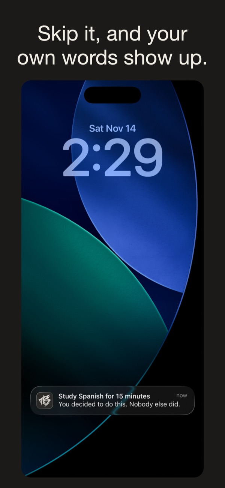
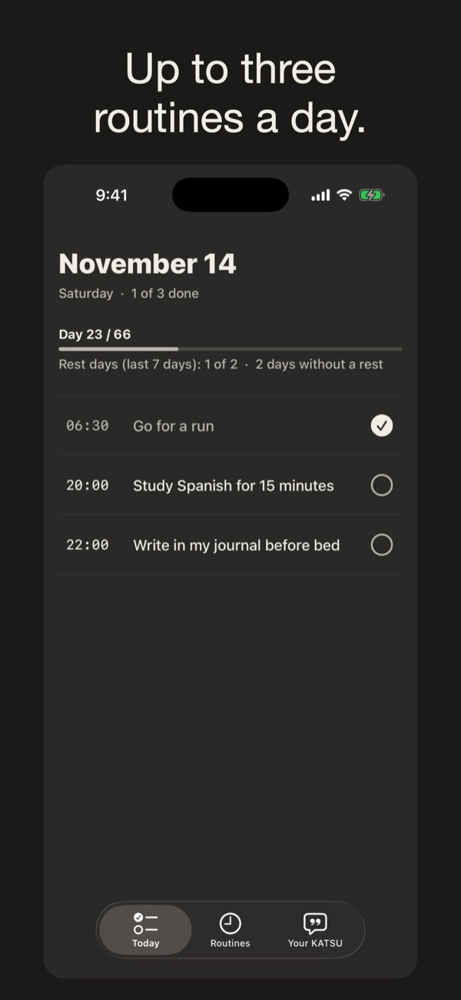
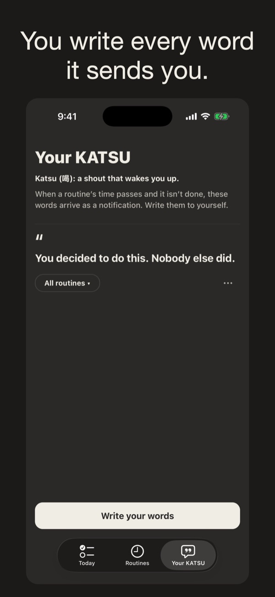

The voice that brings you back.
When the time you set passes and you haven't done it yet, the words you wrote to yourself show up.
View on the App StoreFor iPhone. Free to use.




How it works
- Pick up to three things to do every day, each with a time.
- Write a few words to the you who'll forget.
- If the time passes and it isn't checked off, those words show up.
KATSU doesn't write anything for you. The only words it sends are yours.
Graduate at 66 days
Once you've finished every routine on 66 days, you graduate. In one study, the median time for a habit to feel automatic was 66 days. It varied a lot from person to person.
You get up to 2 rest days in any 7. Resting doesn't take away the days you already have.
Your words stay on your phone
Nothing you write is sent or analyzed. There's no account and no cloud. Delete the app and the words go with it.
Free and paid
Routines, check-offs, notifications, widgets and graduation are free. Up to three sets of words are free too, and they take turns day by day.
A paid plan lets you keep more than three and send different words for different routines.
Or search "KATSU habit" on the App Store.